The goal
Part of Farsight takes place out in a huge field, walking towards a house in the middle of it. The grass needed to look good right at your feet, keep going all the way to the horizon, and still run well on low-end machines.
How it works
No single grass system did all of that, so the field is three layers, each covering a different distance. Up close it's meadow grass from The Vegetation Engine, drawn with GPU Instancer Pro. Further out it's GrassFlow, which draws blades on the GPU. Past that, a ground shader paints grass all the way to the horizon. All three read the same settings for colour, wind and clouds, so you can't see where one stops and the next one starts.
1. Three layers
Each layer only has to be good at its own distance. The meadow grass is detailed but expensive, so it only covers the 30 metres around you. GrassFlow's blades are cheap, so they cover the middle distance and thin out as they go. The ground shader is the cheapest of all and fills in everything beyond that.
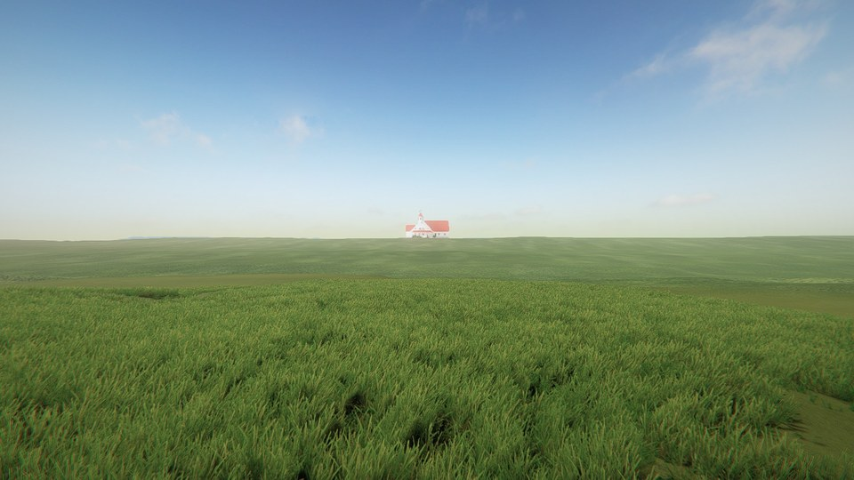
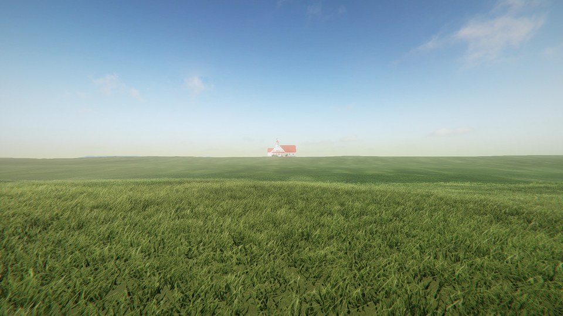
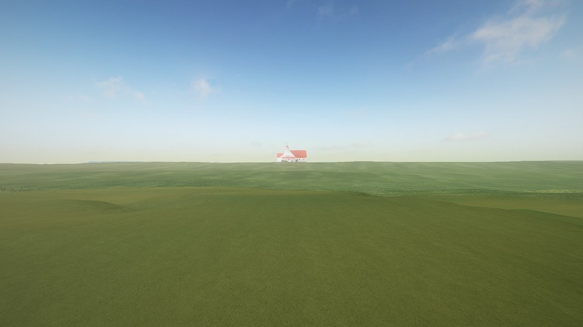
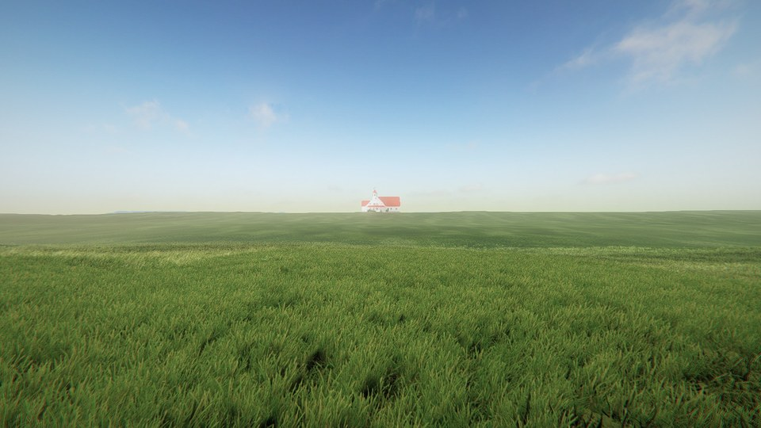
2. Grass that follows you
The meadow grass comes in patches about 6 metres wide. They sit on a grid that moves with you, and each grid cell picks its patch's position, rotation and size from a hash of its coordinates. That way the same spot always gets the same patch, nothing pops as you walk, and the cost stays the same however big the field gets.
The first version had bare holes in it. The patch's grass sits about a metre off its pivot, so when patches were placed by their pivot, the thin sides of a few neighbours would line up and leave gaps. Placing each patch by the middle of its grass instead got rid of them.
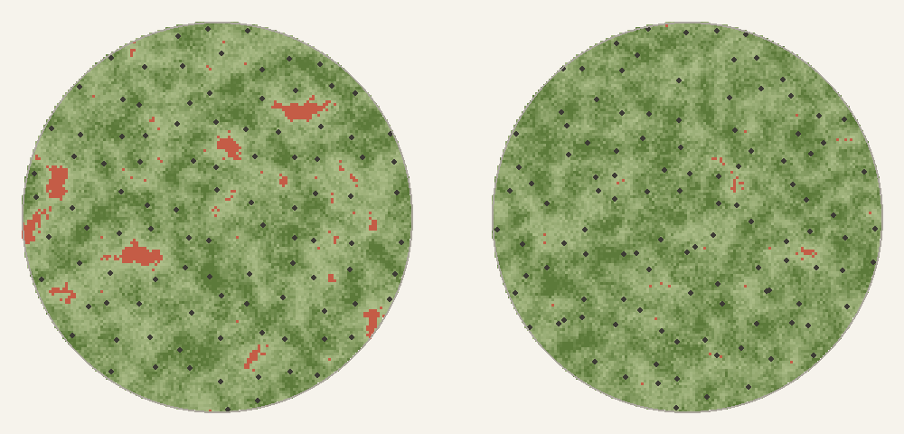
Slopes were the other problem. A flat 6 metre patch on a bank sinks into the ground on one side and hangs over the edge on the other. Each patch now samples the ground at nine points, fits a plane through them and tilts to match. If the ground still bends too far away from that plane, like on the edge of a bank, the patch isn't placed at all.
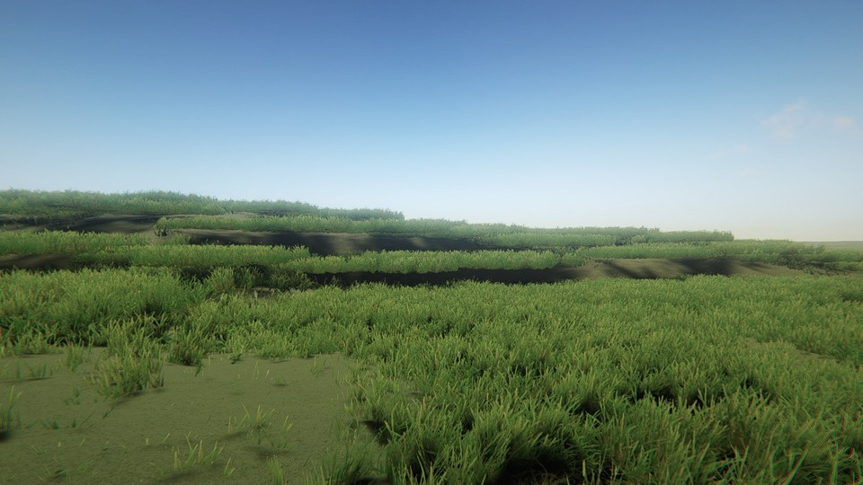
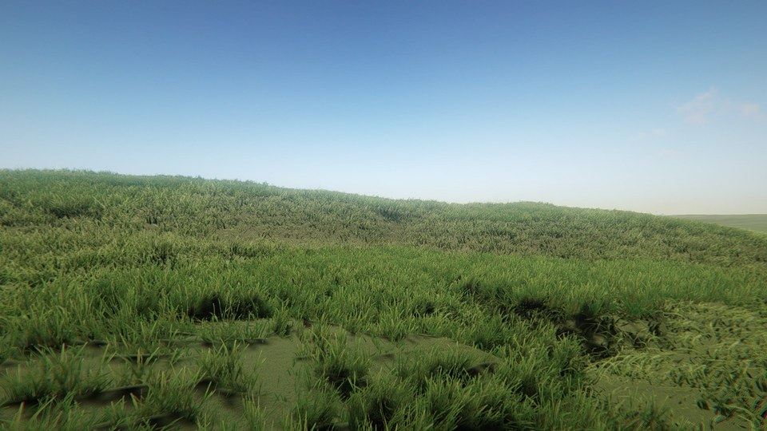
3. Handing over
Where the meadow grass is, the GrassFlow blades need to stay out of the way, or you get two layers of grass on top of each other. Every time the patches move, the meadow writes a small map of where it actually covers the ground, and the blades hide only there. The spots it skipped, like steep banks, keep their blades.
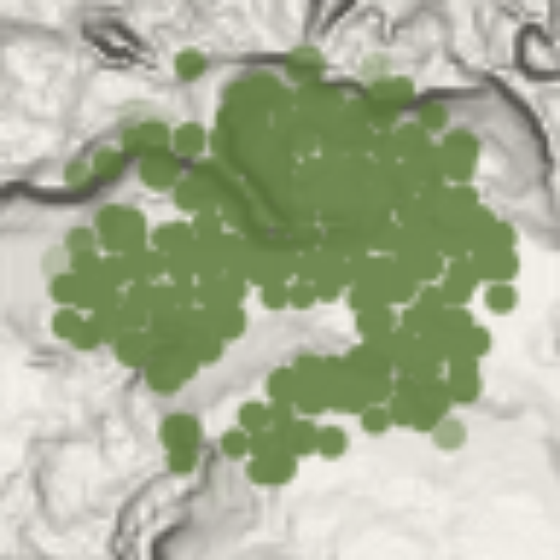
4. Drawing less
GrassFlow splits the field into chunks and decides how many blades to draw per chunk, based on its nearest edge. With 31 metre chunks, any chunk touching you was drawn at full density all the way across, even its far side. Halving the chunk size, and adjusting how quickly density drops off, made it draw about 36% fewer blades for the same look.
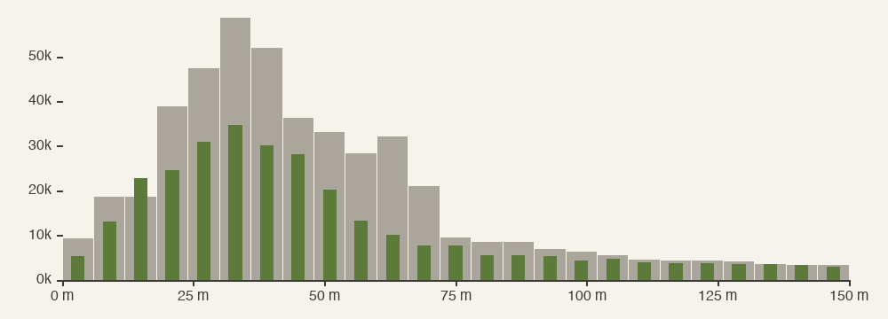
Far away, GrassFlow faded blades out by hiding them pixel by pixel. Once a blade is only a pixel or two wide, that leaves stray dark specks. Now each blade gets its own random cut-off and shrinks into the ground as a whole when the fade passes it.
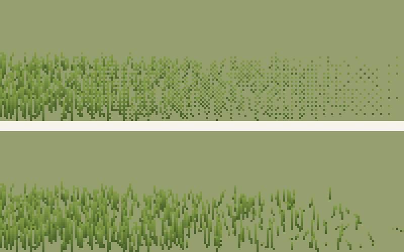
Along the way we found that when GrassFlow counts its blades, it writes them into a tiny placeholder buffer, past its end. On Windows the extra writes get thrown away, but on a Mac they corrupted GPU memory. Skipping those writes while counting fixed it.
5. One sky for everything
All three layers take their colour, wind gusts and haze from the same set of global values, so a gust or a change in colour moves across the whole field at once. Cloud shadows are a texture the sun shines through, which drifts with the wind, so anything the sun lights darkens under the same clouds.
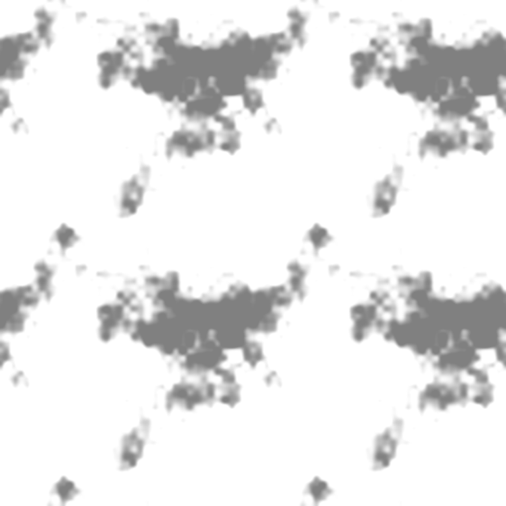
GrassFlow works out its colour per vertex and doesn't read that texture itself, so its shader samples the same cloud texture through the same projection as the sun. That lines its shadows up exactly with the ones on the meadow and the ground.
float2 uv = ComputeLightCookieUVDirectional(_MainLightWorldToLight, positionWS,
float4(1, 1, 0, 0), URP_TEXTURE_WRAP_MODE_NONE);
float cookie = SAMPLE_TEXTURE2D_LOD(_MainLightCookieTexture, sampler_MainLightCookieTexture, uv, 0).r;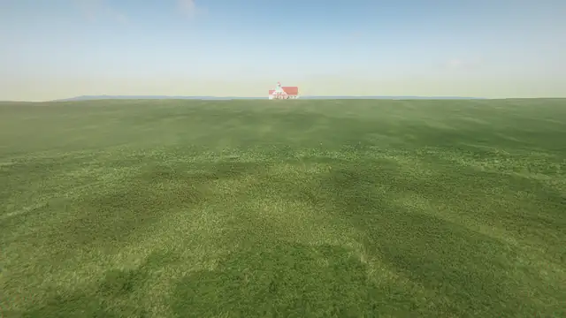
The diagrams on this page were drawn with Python from data exported from the game. Everything else was captured in Unity.